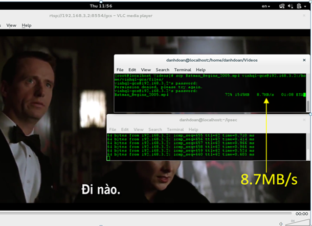
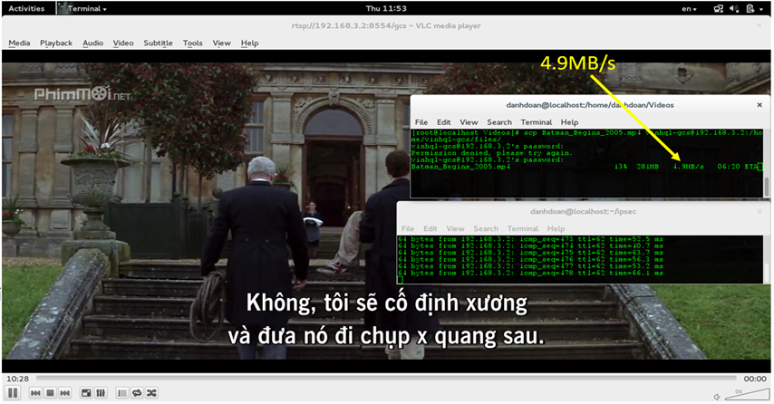
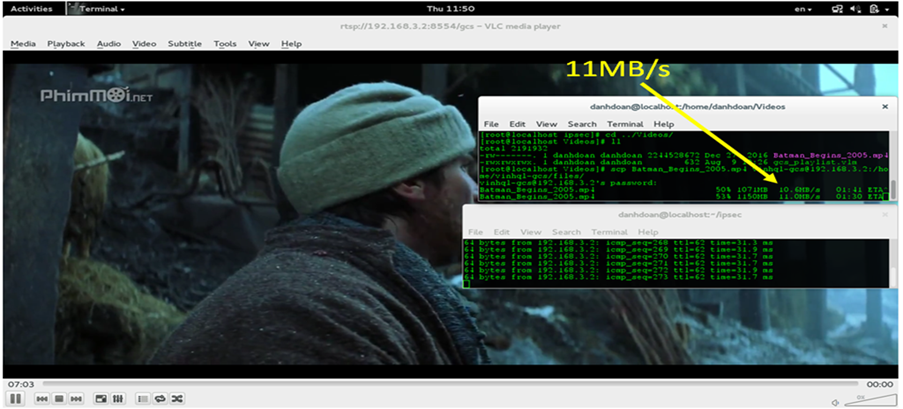

The Need for High Speed IPSec
IP Security (IPSec) is a security protocol that provides a secure way to authenticate senders and encrypt IP (IPv4 and IPv6) traffic between networks.
IPSec offers the benefits of data confidentiality, data integrity, sender authentication, and anti-replay services
What are IPSec modes?
IPSec works on two modes to exchange traffic for Virtual Private Network in the most secure ways. There are two types of IPSec modes: tunnel mode and transport mode.Transport mode
Protect traffic by delivering packets directly between the two hosts that have established the IPsec tunnel. That is, when the communication and cryptography endpoints are the same. The IP packet’s payload is encrypted, but the IP header is not.Tunnel mode
Tunnel mode encapsulates the original IP packet into another packet in the VPN tunnel to protect traffic. This method authenticates peers using pre-shared keys with IKE or digital certificates with IKE.

How does IPSec work?
Now finally you understand the components of IPSec, let’s learn how these components work and create a secure path for senders and receivers to communicate.IPSec Overview
The trend of applying new generation networks, centralized and capable of processing large amounts of data such as Big Data, Cloud Computing has become a necessity recently.
The speed of data transfer, the speed of the communication & connection standards are increased vigorously (e.g, Fiber optic 10g-40G, PCIe-Gen3 standard ...).
Requires a fast, reliable security system to meet the real-time data security needs of the network.
Goal of this Proof of Concept Development
Develop PoC for high-speed IPSec system, security and authentication applications in Data Centers, in Cloud systems, security meets real-time applications.

Some solutions for IPSec Systems


High Speed IPSec Development on Solution 2nd

Phase 1st (IKE SA): by IKE Daemon - Linux Crypto Framework.
Phase 2nd (IPsec SA) by GCS solution: Plugin Crypto driver and HW accelerator for AES, SHA.
IPSec System Development Demonstration
Hardware
- FPGA Zedboard with Dual ARMs microprocessors
- Dual Ethernet ports
OS and Crypto Framework
- Linux OS
- Strongswan
IPSec build-in
- Hardware AES, SHA-256
- Cryptography driver

IPSec Testing Results

Bandwidth testing with IPSec by Hardware

Bandwidth testing with IPSec by Software
